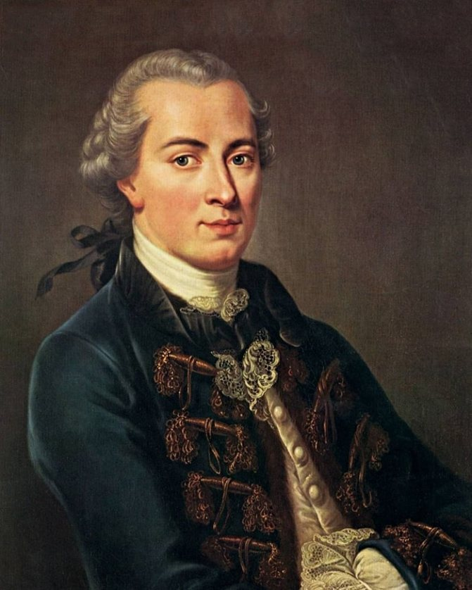

Правильный ответ:
Иммануил Кант
Иммануил Кант являлся основоположником “Немецкой классической философии”. Все творчество философа можно разделить на два периода, докритический и критический. Он написал такие работы как: "Критика чистого разума", "Критика практического разума", "Критика способности суждения".